Two independent flows live in this project: the router (router.py) that decides SIMPLE vs. COMPLEX for every query, and the chunk-size sweep (chunk_sweep.py) that separately searches for the best cost/quality frontier. The diagram traces both.

| Node | Location | What it does |
|---|---|---|
| CLASSIFY / PARSE | router.py:classify() | The small model classifies its own query's complexity. Two separate failure modes are both handled: json.loads() raising an exception (unparsable), and a valid-JSON-but-wrong-value tier (the model returning something other than SIMPLE/COMPLEX). |
| ROUTE | router.py:route_and_answer() | The actual routing decision is a single if tier == 'SIMPLE' — everything else, including any fail-safe outcome from PARSE, routes to the LARGE model. The fail-safe direction matters: ambiguity costs a few cents extra, never a wrong-cheap answer on a hard query. |
| SLOOP1 / SLOOP2 | chunk_sweep.py:sweep() | A nested loop: for each of 3 chunk sizes, rebuild a fresh Chroma index, then for each of 3 k values, run all 4 eval questions and score hit-rate — 9 total configurations measured. |
| KEYWORDCHECK | chunk_sweep.py:sweep() | A deterministic (not LLM-judged) quality proxy: does the retrieved context contain the expected keyword string? Chosen specifically to remove judge-model variance from the chunk-size measurement. |
"Who approves a rollback?" classifies as SIMPLE (matches expectation) → routed to the cheap model, both because it's actually simple and because that's what the small classifier decided.
CLASSIFY → PARSE(ok) → VALIDTIER(ok) → ROUTE(SIMPLE) → SMALLMODEL → GENERATEIf the small model responds with non-JSON text, the code never lets that silently become SIMPLE routing — it defaults to the safer, more expensive path.
CLASSIFY → PARSE(fails) → FAILSAFE1(COMPLEX) → ROUTE → LARGEMODEL → GENERATESweeping 3×3=9 configs found chunk_size=1000, k=4 as the best hit-rate-per-token point — going to k=6 at the same chunk size added ~365 tokens per query for zero additional hit-rate.
SLOOP1(1000) → SLOOP2(4) → KEYWORDCHECK(4/4 hit) → BESTYou need three numbers measured against a labeled query set: the classifier's own accuracy (how often SIMPLE/COMPLEX matches ground truth), the cost delta between routing tiers, and the quality delta of answering a genuinely-complex query with the cheap model on a misclassification. Net savings = (fraction correctly routed SIMPLE × cost saved) − (fraction misclassified SIMPLE × cost of wrong answers, e.g. re-asks or downstream errors). This project doesn't currently compute that last term — it's the missing piece before I'd trust the routing math in production.
A third tier adds a whole new branch to validate and a new cost point to model, for a case (classifier ambiguity) that should be rare by design — if it's not rare, the classifier itself needs fixing, not a bigger routing table. A confidence-weighted blend is technically elegant but non-deterministic in a way that makes cost budgeting harder to reason about and debug. The two-tier fail-safe is deliberately the simplest design that has the right safety property (never silently give a cheap-and-possibly-wrong answer); I'd only add complexity here once I had evidence the simple version was actually leaving savings on the table.
It's defensible for a parameter sweep across a handful of chunk_size × k combinations against a small, hand-curated eval set — cheap, fast, deterministic, good enough to find the right ballpark. It stops being defensible once you're tuning against a large, diverse query set where keyword presence stops correlating with actual relevance (paraphrases, multi-hop questions). At that point I'd switch to a held-out human-labeled relevance set with a proper IR metric (nDCG or MRR), and reserve LLM-judged relevance for the final validation pass rather than the inner sweep loop, since judge cost/variance would dominate a sweep run many times.
I'd avoid re-classifying at every hop (each classification is a chance to misroute) and instead do one upfront complexity estimate that directly maps to a tier, plus an escalation path based on the answering model's own confidence or a lightweight verifier check — e.g. cheap model answers, a fast heuristic or small verifier checks the answer, and only escalates to the next tier if that check fails. This shifts the routing signal from 'how hard does this look upfront' (error-prone, single classifier) to 'did the cheap attempt actually work' (grounded in the real output), which compounds much less across tiers.
Online measurement and a feedback loop — right now cost/quality trade-offs are validated offline against a static eval set, but production query distributions drift. I'd add live sampling of a fraction of SIMPLE-routed queries to also run through the COMPLEX model in shadow mode, comparing outputs to catch classifier drift or a shifting query mix before it becomes a systemic quality regression, plus dashboards on the SIMPLE/COMPLEX split ratio over time as an early warning signal.